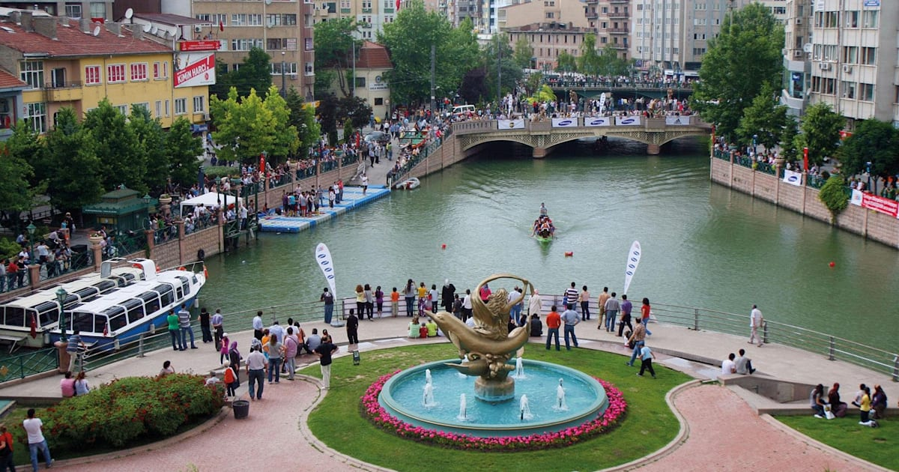

ESKİŞEHİR
Eskişehir, Türkiye'nin bir ili ve en kalabalık yirmi beşinci şehridir.
Ayrıca nüfus bakımından Ankara, Konya, Kayseri'den sonra İç Anadolu bölgesinin en büyük 4. ilidir.
1993 yılında çıkarılan kanunla Büyükşehir Belediyesi olmuştur. Nüfusu 2021 yılı TÜİK istatistiklerine göre 898.369'dur.
Ortasından Porsuk Çayı geçen şehir, içerisinde Osmangazi Üniversitesi, Eskişehir Teknik Üniversitesi ve Anadolu Üniversitesinin bulunması nedeniyle bir öğrenci kenti görünümündedir.
 Sayfalara Ulaşmak İçin Aşağıdaki Linkleri Kullanabilirsiniz.
İlerleyen sayfalarda ilçelerden , tarihi ve gezilebilecek yerleri göreceğiz.
Diğer Sayfaya Geçmek İçin Tıklayınız.